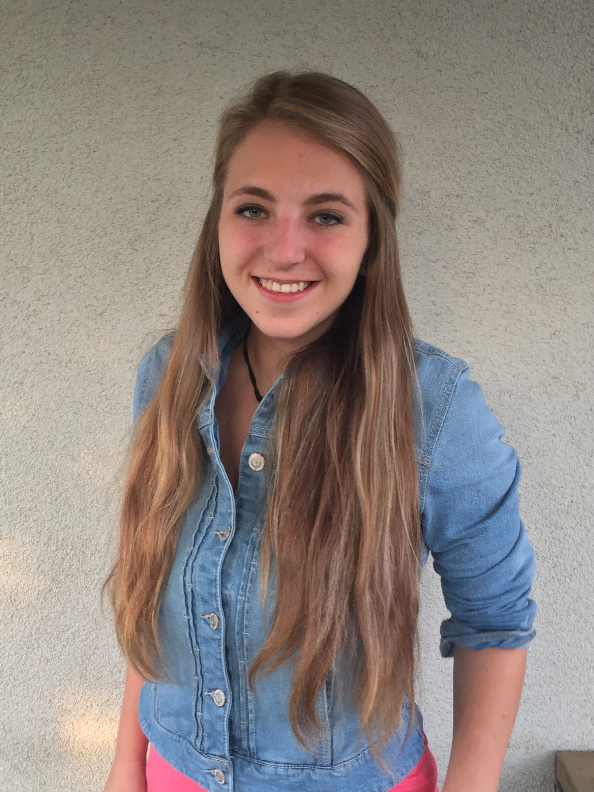

Životopis-Tereza Dušková
Osobní Informace
- Jméno a příjmení: Tereza Dušková
- Datum narození: 9.5.1997
Kontaktní údaje
- Tel: 730982523
- Email: duskova.terez@seznam.cz
- Ulice: U Obce 136
- Město: Praha
- PSČ: 14300
Vzdělání
- 2012-2016
- Střední škola s maturitou, obor Informační a komunikační technologie
- 2016-doposud
- Vysoká škola Ekonomická- Obor Informační média a služby
Praxe
- 2013 PepsiCo s.r.o
- 2014 Kancelářské stroje
- Školní praxe-pomoc IT specialistům
- 2016-doposud ELIT CZ,spol.s.r.o
- Administrativní pracovník
- 2016-doposud PORT LINGUA s.r.o
- titulkář na akcích (FebioFest, Karlovy Vary)
Jazykové znalosti
Řidičský průkaz
Technické znalosti a dovednosti
- Programování: Java, C#, C++
- Databázové systémy: MSSQL, Oracle
- Microsoft Office (Word, Excel, Acces)
Zájmy
- Sporty (házená, softball, cyklistika, plavání, běhání, tenis), Fotografování a upravování fotek, Hudba,
Filmy,
Knihy